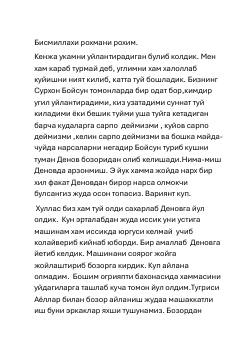

HDenov bozorida tasodifiy uchrashuv orqali hayot va do'stlik haqida samimiy hikoya.
Bu hikoya Surxondaryo viloyatidan bo'lgan Tohirjon ismli erkak va uning Denov bozorida tasodifan uchratgan tanishi Abdusalom aka bilan bo'lgan suhbatini tasvirlaydi. Asarda to'y tayyorgarligi, hayotiy qiyinchiliklar va insonlar o'rtasidagi samimiy munosabatlar aks ettirilgan. Voqealar orqali o'zbek turmush tarzi va an'analari jonli tarzda ko'rsatiladi.